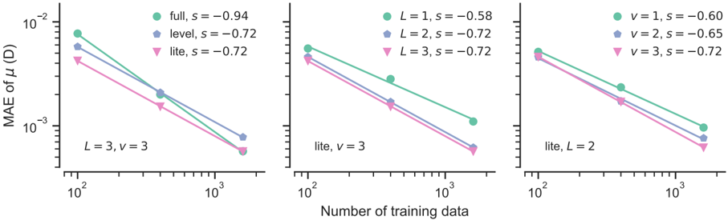

Resumen Detallado: Aprendizaje Automático Atomístico con Tensores Naturales Cartesianos
Resumen General
Este paper presenta CarNet (Cartesian Natural Tensor Networks), un nuevo marco teórico y computacional para el aprendizaje automático atomístico que trabaja directamente en coordenadas cartesianas en lugar de coordenadas esféricas.
- Contexto y Problema
¿Qué es el ML Atomístico?
El aprendizaje automático atomístico predice propiedades de materiales y moléculas directamente desde su estructura atómica:
Entradas: Coordenadas espaciales y tipos de átomos
Salidas: Energías, fuerzas, propiedades tensoriales (momento dipolar, tensor de elasticidad, etc.)
Problema Principal
Los métodos actuales transforman las coordenadas cartesianas {x, y, z} a coordenadas esféricas (distancias y ángulos), pero:
Las estructuras atómicas se describen naturalmente en coordenadas cartesianas
Los métodos cartesianos existentes carecen de un marco teórico sistemático
No pueden predecir tensores complejos de alto rango (como el tensor elástico)
- Solución Propuesta: Teoría de Tensores Naturales Cartesianos
¿Qué es un Tensor Natural?
Un tensor natural es un tensor cartesiano que cumple dos propiedades:
Simétrico: Invariante bajo permutación de índices
Sin traza: La traza sobre cualquier par de índices es cero
Propiedades clave:
Un tensor natural de rango n tiene solo 2n+1 componentes independientes
Son representaciones irreducibles del grupo SO(3) (rotaciones 3D)
Preservan la equivarianza geométrica
Tres Operaciones Fundamentales
a) Construcción desde un vector unitario:
De r̂ → Generar tensores X₀, X₁, X₂, X₃...
X₀ = 1 (escalar)
X₁ = r̂ (vector)
X₂ = r̂⊗r̂ (sin traza)
X₃ = r̂⊗r̂⊗r̂ (sin traza)
b) Producto de tensores naturales:
X_l₁ ⊗̂ Y_l₂ = Z_l₃
donde |l₁ - l₂| ≤ l₃ ≤ l₁ + l₂
c) Descomposición y reconstrucción:
Cualquier tensor físico puede descomponerse en suma de tensores naturales
Y puede reconstruirse desde ellos
Ejemplo: tensor rango-2 = tensor rango-0 + tensor rango-1 + tensor rango-2
- Arquitectura del Modelo CarNet
Flujo del Modelo:
Entrada → Codificación → Capas GNN → Salida
Componentes Principales:
1. Codificación de Posición:
Vector relativo r → distancia escalar r y dirección r̂
r se expande con polinomios de Chebyshev (parte radial R)
r̂ se transforma en tensores naturales X
- Embedding de Especies:
Número atómico z → características iniciales aprendibles h
-
Momento Atómico:
M = R · h ⊗̂ X -
Hiper-momento:
H = M ⊗̂ M ⊗̂ ... ⊗̂ M
Captura interacciones de muchos cuerpos (3, 4, n-cuerpos) - Actualización de Características:
Se aplican 2-3 capas de GNN
Conexión residual entre capas
- Construcción de Salida:
Para potenciales: Extraer componente escalar (rango-0)
Para tensores: Seleccionar y reconstruir desde componentes naturales relevantes
- Resultados Experimentales
A) Potenciales Interatómicos
LiPS (Electrolito sólido):
MAE energía: 0.09 meV (mejor que NequIP: 0.12)
MAE fuerzas: 5.6 meV/Å (mejor que NequIP: 7.7)
Agua líquida:
RMSE energía: 0.54 meV (mejor que MACE: 0.63)
RMSE fuerzas: 31 meV/Å (mejor que MACE: 36)
Simulaciones MD:
Estables durante 50 ps sin colapso
RDF (función de distribución radial) coincide con AIMD y experimentos
Coeficientes de difusión precisos:
Li⁺ en LiPS: D = 1.09×10⁻⁵ cm²/s (ref: 1.37×10⁻⁵)
Agua: D = 2.92×10⁻⁵ cm²/s (ref: 2.67×10⁻⁵)
B) Moléculas de Etanol
Mejoras sobre TensorNet:
Momento dipolar μ: 3× menor error
Desplazamiento químico nuclear δ: 3× menor error
Tensor de apantallamiento nuclear σ: Predicción completa (antes inaccesible)
Capacidades únicas:
Predice el tensor elástico completo (rango-4, hasta 21 componentes)
Preserva simetrías cristalinas automáticamente
Calcula módulo de Young direccional Ed para analizar anisotropía
- Innovaciones Técnicas
Selección de Rutas de Producto Tensorial
Tres modos:
Full: Todas las rutas posibles (máxima expresividad, más lento)
Lite: Rutas restringidas (60% del tiempo de full, mejor generalización)
Level: Intermedio
Hallazgo: El modo "lite" es óptimo para la mayoría de casos.
Dependencia de Especies Atómicas
Incorporar número atómico z en los pesos mejora precisión
Excepto para datasets con muchos elementos (84+) y pocos datos
7. Limitaciones y Trabajo Futuro
Limitaciones actuales:
Selección de rutas tensoriales guiada empíricamente (no teóricamente)
Falta optimización GPU específica (existe para esféricos)
Aplicaciones potenciales:
Extensión a nubes de puntos generales (imágenes médicas 3D, LiDAR)
Modelos fundacionales con muchos elementos
Predicción de propiedades tensoriales complejas
- Conclusiones Principales
CarNet es el primer marco sistemático para ML atomístico cartesiano con teoría completa
Supera el estado del arte en:
Potenciales interatómicos (materiales y moléculas)
Predicción de propiedades tensoriales
Tensor elástico completo (nunca antes logrado)
Elimina barreras teóricas para enfoques cartesianos en ML atomístico
Abre nuevas posibilidades:
Modelado de tensores arbitrarios
Relaciones estructura-propiedad más ricas
Mejor interpretabilidad física
Marco matemático completo para operaciones con tensores naturales (creación, producto, descomposición/reconstrucción)
Disponibilidad
Código: https://github.com/wengroup/carnet
Tensores naturales: https://github.com/wengroup/natt
Datasets: Públicamente disponibles
Este trabajo representa un avance fundamental en la teoría y práctica del aprendizaje automático para ciencia de materiales.
Figuras del Paper (5)

FIG. 1. Schematic illustration of Cartesian natural tensor operations. a . Construction of natural tensors of different ranks from a unit vector ˆ r . b . Tensor product between a rank-1 and a rank-2 natural tensor generates three natural tensors of ranks 1, 2, and 3. c . Any physical tensor (e.g., the nuclear shielding tensor) can be decomposed into a set of natural tensors and, conversely, reconstructed from them. ⊗ is the product between ordinary tensors, ˆ ⊗ is the product between natural tensors, and ⊕ is the direct sum of natural tensors.
FIG. 1. Schematic illustration of Cartesian natural tensor operations. a . Construction of natural tensors of different ranks from a unit vector ˆ r . b . Tensor product between a rank-1 and a rank-2 natural tensor generates three natural tensors of ranks 1, 2, and 3. c . Any physical tensor (e.g., the nuclear shielding tensor) can be decomposed into a set of natural tensors and, conversely, reconstructed from them. ⊗ is the product between ordinary tensors, ˆ ⊗ is the product between natural tensors, and ⊕ is the direct sum of natural tensors.

FIG. 2. Overview of the CarNet model architecture. The relative distance vector r of an atom from its neighbor is encoded using a set of radial basis and natural tensors. The atomic species z is encoded using a learnable embedding to generate the initial atom features h . With the radial part R , the angular part X , and the atom features h , each GNN layer first constructs the atomic moment and then the hyper moment using natural tensor products. Finally, the atomic features are mapped to the target properties using an output head.
FIG. 2. Overview of the CarNet model architecture. The relative distance vector r of an atom from its neighbor is encoded using a set of radial basis and natural tensors. The atomic species z is encoded using a learnable embedding to generate the initial atom features h . With the radial part R , the angular part X , and the atom features h , each GNN layer first constructs the atomic moment and then the hyper moment using natural tensor products. Finally, the atomic features are mapped to the target properties using an output head.

FIG. 3. MD simulation results of bulk LiPS and water systems. a -c : Crystal structure, RDF, and MSD of Li + ions versus time of LiPS. d -f : Simulation cell, RDF of oxygen-oxygen pairs, and MSD versus time of bulk water. The MD simulations using CarNet were performed at a temperature of 520 K for LiPS and 300 K for water. The reference AIMD and experimental results are at the same temperatures, except for the X-ray diffraction data, which is at 295 K [42]. Five MD simulations with different initial velocities were performed, and the reported diffusion coefficients D are the average over these runs. The water cell in panel d is shown for demonstration; the actual MD simulation used a 2 × 2 × 2 replication of this cell. Simulation cells are plotted using AtomViz [43]. Atom colors: purple (Li), orange (P), yellow (S), red (O), and white (H). RDF: radial distribution function; MSD: mean square displacement.
FIG. 3. MD simulation results of bulk LiPS and water systems. a -c : Crystal structure, RDF, and MSD of Li + ions versus time of LiPS. d -f : Simulation cell, RDF of oxygen-oxygen pairs, and MSD versus time of bulk water. The MD simulations using CarNet were performed at a temperature of 520 K for LiPS and 300 K for water. The reference AIMD and experimental results are at the same temperatures, except for the X-ray diffraction data, which is at 295 K [42]. Five MD simulations with different initial velocities were performed, and the reported diffusion coefficients D are the average over these runs. The water cell in panel d is shown for demonstration; the actual MD simulation used a 2 × 2 × 2 replication of this cell. Simulation cells are plotted using AtomViz [43]. Atom colors: purple (Li), orange (P), yellow (S), red (O), and white (H). RDF: radial distribution function; MSD: mean square displacement.

FIG. 4. Performance of CarNet in predicting elastic properties . a . Predicted bulk modulus K , shear modulus G , and Young's modulus E compared with reference DFT values (84 elements). b . Normalized error by crystal system. c . Directional Young's modulus E d of CaS predicted by the model. The cubic symmetry of rocksalt CaS is clearly reflected in the predicted E d . MAE is the mean absolute error, and MAD is the mean absolute deviation.
FIG. 4. Performance of CarNet in predicting elastic properties . a . Predicted bulk modulus K , shear modulus G , and Young's modulus E compared with reference DFT values (84 elements). b . Normalized error by crystal system. c . Directional Young's modulus E d of CaS predicted by the model. The cubic symmetry of rocksalt CaS is clearly reflected in the predicted E d . MAE is the mean absolute error, and MAD is the mean absolute deviation.

FIG. 5. Learning curve for ethanol dipole moment determination. MAE in the dipole moment µ training as a function of the size of the training set for models with: a . tensor product mode 'full', 'level' and 'lite'; b . maximum tensor rank L = 1 , 2 , 3; c . maximum correlation degree v = 1 , 2 , 3. The slope s of each linearly fitted curve in log-log space is also reported.
FIG. 5. Learning curve for ethanol dipole moment determination. MAE in the dipole moment µ training as a function of the size of the training set for models with: a . tensor product mode 'full', 'level' and 'lite'; b . maximum tensor rank L = 1 , 2 , 3; c . maximum correlation degree v = 1 , 2 , 3. The slope s of each linearly fitted curve in log-log space is also reported.